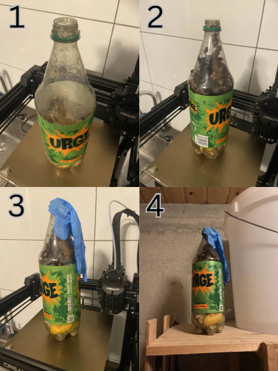

Introduksjon
Dette prosjektet handler om produksjon av biogass ved å bruke matavfall som råmateriale. Hovedmålet er å vise hvordan vi på en bærekraftig måte kan utnytte biologisk nedbrytbart avfall og samtidig bidra til en mer effektiv ressursforvaltning.
Forskningsspørsmål
Problemstilling:Hvordan kan vi omdanne matavfall til biogass og bruke det som en bærekraftig energikilde?
Eksperiment
For å lage biogass har vi gjort følgende:
- Lagt frukt og annen mat som kan råtne i en plastflaske.
- Plassert en ballong på toppen for å samle opp gassen som produseres.
- Overvåket prosessen i 2 uker.
Resultater
Under dette eksperimentet la vi merke til at mengden biogass som ble produsert var lavere enn vi hadde forventet. Dette kan ha vært på grunn av flere mulige årsaker:
- For lav temperatur: Rommet der eksperimentet ble gjennomført hadde ikke høy nok temperatur til å fremme anaerob nedbrytning.
- Mangel på vann: Det var ikke nok vann i flasken til å sikre et optimalt fuktig miljø for mikroorganismene.
- Uegnet materiale: Valg av frukt og annen mat som kan råtne, kan ha vært mindre effektivt for biogassproduksjon.
For å forbedre eksperimentet i fremtiden vil vi:
- Øke temperaturen i rommet under eksperimentet.
- Tilsette mer vann i flasken.
- Teste med andre typer matavfall som kan være bedre egnet for biogassproduksjon.

Interaktiv del
Se hvordan biogass kan brukes som energikilde ved å trykke på knappen under:
Vår biogass podcast!
Lytt til et lydklipp om biogassproduksjon:
Biogass Bruksområder
Biogass kan brukes til:
- Matlaging
- Oppvarming
- Strømproduksjon